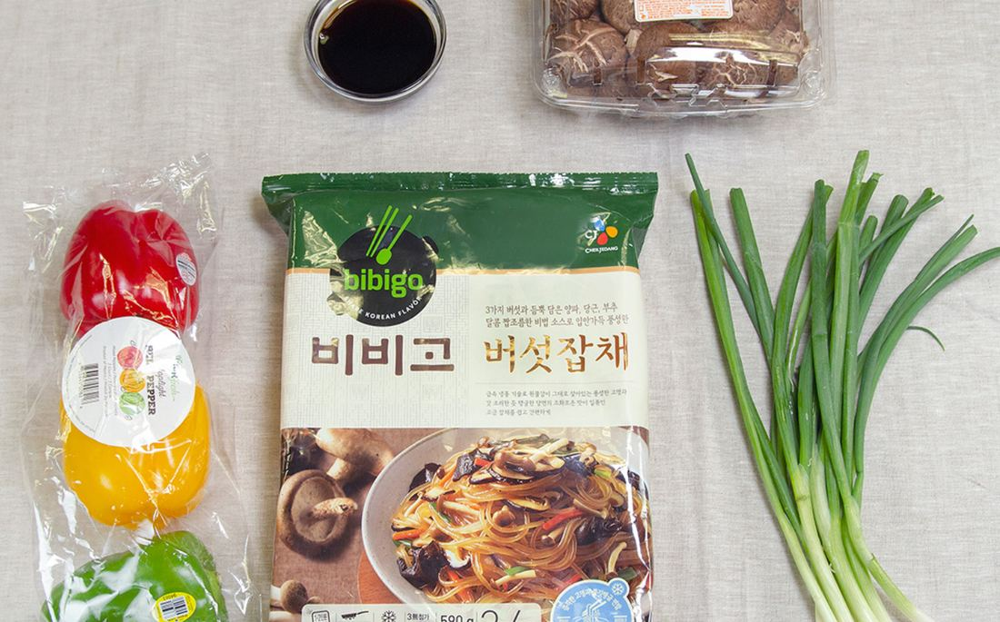

← All posts
No more waiting for side-dish refills at a Korean restaurant to satisfy your Japchae cravings! Zion's got the solution just for you with some of Bibigo's Mushroom Japchae.
Our japchae is filled with mushrooms and veggies with a flavorful savory umami
Mushroom Japchae
Mushroom Japchae
The iconic Korean stir-fried glass noodle (Japchae) can now be enjoyed at the comfort of your homeNo more waiting for side-dish refills at a Korean restaurant to satisfy your Japchae cravings! Zion's got the solution just for you with some of Bibigo's Mushroom Japchae.
Our japchae is filled with mushrooms and veggies with a flavorful savory umami

Ingredients
- Bibigo Mushroom Japchae 1 pkg
- Shiitake Mushroom 3 pcs/15 g
- Bell Peppers 30 g
- Maeil Soy Sauce w/Kelp 2 tbsp/15 g
Recipe
List of Services
-
Step 1
Heat up ingredients accordingly to the Bibigo Mushroom Japchae package.
Item Link List Item 1 -
Step 2
Add more toppings such as mushrooms and bell pepper for garnish.
Item Link List Item 2 -
Step 3
Add Maeil Soy Sauce with Kelp according to your taste.
Item Link List Item 3
List of Services
-
Step 1
Heat up ingredients accordingly to the Bibigo Mushroom Japchae package.
Item Link List Item 1 -
Step 2
Add more toppings such as mushrooms and bell pepper for garnish.
Item Link List Item 2 -
Step 3
Add Maeil Soy Sauce with Kelp according to your taste.
Item Link List Item 3
< Older Post
Newer Post >
Shop these ingredients at Kimchi Mart
Six stores across South Florida — or order online and pick up in an hour.